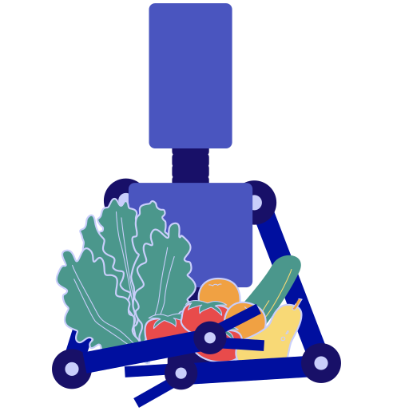

3.1¿Qué es JSON?
JSON (JavaScript ObjectNotation) es un formato para el intercambio de datos. Describe los datos con una sintaxis dedicada que se usa para identificar y gestionar los datos. JSON nació como una alternativa a XML.
Existen varias alternativas a JSON como son XML, TOML, CSON, YAML

3.2JSON vs XML
Una de las mayores ventajas que tiene el uso de JSON es que puede ser leído por cualquier lenguaje de programación. Por lo tanto, puede ser usado para el intercambio de información entre distintas tecnologías.
-
XML
Seleccionar código<empinfo> <employees> <employee> <name>James Kirk</name> <age>40</age> </employee> <employee> <name>Jean-Luc Picard</name> <age>45</age> </employee> <employee> <name>Wesley Crusher</name> <age>27</age> </employee> </employees> </empinfo> -
JSON
Seleccionar código{ "empinfo" : { "employees" : [ { "name" : "James Kirk", "age" : 40, }, { "name" : "Jean-Luc Picard", "age" : 45, }, { "name" : "Wesley Crusher", "age" : 27, }, ] } }
El uso de JSON y XML en la industria del desarrollo software de los últimos años se puede ver en la siguiente imagen:
3.3Componentes
Un JSON se compone de una estructura Nombre/Par de valores.
Para asignar a un nombre un valor, debemos usar los dos puntos :, este separador es el equivalente al igual (=) de cualquier lenguaje
"Nombre" : "Manzana"
JSON tiene dos componentes: objetos y arrays. Los objetos JSON se identifican entre llaves {}. Un objeto puede ser, en nuestro caso, una fruta o una verdura
{
"NombreFruta" : "Manzana",
"Cantidad" : 20
}
Los arrays JSON se identifican entre corchetes []. Representan una lista ordenada de valores. Pueden ser enteros, booleanos, strings u objetos.
"Frutas":
[
{ "NombreFruta" : "Manzana", "Cantidad" : 10 }
{ "NombreFruta" : "Pera", "Cantidad" : 20 }
{ "NombreFruta" : "Naranja", "Cantidad" : 30 }
]
3.4JSON minificado y JSON View
En muchas ocasiones, se trabaja con archivos JSON, donde todos los espacios y saltos de línea han sido eliminados, buscando ocupar el mínimo espacio posible. Esta técnica se llama "minificado". Minificar es conseguir que un fichero sea menos pesado modificando ciertos elementos: espacios innecesarios, saltos de línea, tabulaciones, comentarios.
El problema que presenta la minificación es que el fichero se vuelve confuso a la hora de ser leído o interpretado por humanos, pero no por los ordenadores.
Muchas veces se trabaja con JSON Minificado
{"marcadores":[{"latitude":40.416875,"longitude":-3.703308,"city":"Madrid","description":"PuertadelSol"},{"latitude":40.417438,"longitude":-3.693363,"city":"Madrid","description":"PaseodelPrado"},{"latitude":40.407015,"longitude":-3.691163,"city":"Madrid","description":"EstacióndeAtocha"}
Para visualizar archivos JSON se pueden utilizar multitud de herramientas, tanto online como en local, en el propio ordenador. Una de ellas es http://jsonviewer.stack.hu

3.5JSON en Python
Existe una estrecha relación entre los tipos de datos usados en Python y los tipos de datos JSON. En esta tabla la vemos:
PythonJSON
dictObject
listArray
tupleArray
strString
intNumber
floatNumber
Truetrue
Falsefalse
Nonenull
A continuación, vamos a ver una serie de ejemplos sobre cómo interpretar y manipular datos en formato JSON. Para ello, utilizaremos el módulo json.
En la actualidad, todos los lenguajes de programación disponen de módulos o librerías especializadas para el manejo de datos en formato JSON. En la web oficial de JSON, en el final de la página, se encuentra un listado de más de 200 librerías y módulos para más de 60 lenguajes de programación diferentes
Primeramente, vamos a crear un JSON con el siguiente contenido
Seleccionar código
In [1]
{
"Fruteria": [
{
"Fruta": [
{
"Nombre": "Manzana",
"Cantidad": 10
},
{
"Nombre": "Pera",
"Cantidad": 20
},
{
"Nombre": "Naranja",
"Cantidad": 30
}
]
},
{
"Verdura": [
{
"Nombre": "Lechuga",
"Cantidad": 80
},
{
"Nombre": "Tomate",
"Cantidad": 15
},
{
"Nombre": "Pepino",
"Cantidad": 50
}
]
},
]
}
Out [1]
{ "Fruteria": [{"Fruta": [{ "Nombre": "Manzana", "Cantidad": 10 },
{ "Nombre": "Pera", "Cantidad": 20 }, { "Nombre": "Naranja", "Cantidad": 30 }]},
{"Verdura": [{"Nombre": "Lechuga", "Cantidad": 80 }, { "Nombre": "Tomate", "Cantidad": 15 }, { "Nombre": "Pepino", "Cantidad": 50 }]}]}
Como podemos observar, hemos creado un objeto llamado frutería y, dentro de ese objeto, hemos almacenado un array de dos elementos. El primer elemento del array contiene un objeto llamado fruta y el segundo elemento del array contiene otro objeto llamado verdura. Estos objetos a su vez contienen un array cuyo contenido es el nombre y la cantidad de cada fruta o verdura.
Para acceder a un fichero JSON, usaremos la librería json, que importaremos como hemos hecho con otras librerías:
Seleccionar código
import json
Nuestro módulo json, el cual nos va a permitir manipular datos JSON, también nos permitirá crear y transformar datos que ya tengamos en nuestro programa, (variables) en datos JSON. Esto lo logrará gracias al codificador (dumps). Este codificador será capaz de transformar todo tipo de datos nativos de Python, como son: string, unicode, int, float, list, tuple, dict.
Para nuestro ejemplo, vamos a crear la estructura con diccionarios y listas.
Seleccionar código
In [2]
# Opcion 1 (iniciacion): Creación de las estructuras poco a poco, de dentro a fuera # Diccionarios de las Frutas dicc_frutas_1 = { "Nombre": "Manzana", "Cantidad": 10 } print(dicc_frutas_1) dicc_frutas_2 = { "Nombre": "Pera", "Cantidad": 20 } print(dicc_frutas_2) dicc_frutas_3 = { "Nombre": "Naranja", "Cantidad": 30 } print(dicc_frutas_3) # Diccionarios de las Verduras dicc_verduras_1 = { "Nombre": "Lechuga", "Cantidad": 80 } print(dicc_verduras_1) dicc_verduras_2 = { "Nombre": "Tomate", "Cantidad": 15 } print(dicc_verduras_2) dicc_verduras_3 = { "Nombre": "Pepino", "Cantidad": 50 } print(dicc_verduras_3)
Out [2]
{'Nombre': 'Manzana', 'Cantidad': 10}
{'Nombre': 'Pera', 'Cantidad': 20}
{'Nombre': 'Naranja', 'Cantidad': 30}
{'Nombre': 'Lechuga', 'Cantidad': 80}
{'Nombre': 'Tomate', 'Cantidad': 15}
{'Nombre': 'Pepino', 'Cantidad': 50}
Ya tenemos los diccionarios más internos de nuestra estructura, los que contienen la información de las frutas y de las verduras. Tenemos 3 diccionarios de frutas y 3 diccionarios de verduras, pero este número podría crecer rápidamente. La estructura lógica cuando tenemos una lista de variables, en este caso diccionarios, es una lista. Por lo tanto, introduciremos todos nuestros diccionarios de frutas dentro de una lista y haremos lo mismo con las verduras.
Seleccionar código
In [3]
# Lista de frutas: Contiene los diccionarios de las frutas lista_frutas = [dicc_frutas_1, dicc_frutas_2, dicc_frutas_3] print(lista_frutas) # Lista de verduras: Contiene los diccionarios de las verduras lista_verduras = [dicc_verduras_1, dicc_verduras_2, dicc_verduras_3] print(lista_verduras)
Out [3]
[{'Nombre': 'Manzana', 'Cantidad': 10}, {'Nombre': 'Pera', 'Cantidad': 20}, {'Nombre': 'Naranja', 'Cantidad': 30}]
[{'Nombre': 'Lechuga', 'Cantidad': 80}, {'Nombre': 'Tomate', 'Cantidad': 15}, {'Nombre': 'Pepino', 'Cantidad': 50}]
En este momento tenemos 2 listas, las cuales incluyen las frutas y las verduras. Vamos a crear un diccionario que incluya estas listas:
Seleccionar código
In [4]
dicc_fruta_verdura = {
"Fruta": lista_frutas,
"Verdura": lista_verduras
}
print(dicc_fruta_verdura)
Out [4]
{"Fruta": [{ "Nombre": "Manzana", "Cantidad": 10 }, { "Nombre": "Pera", "Cantidad": 20 }, { "Nombre": "Naranja", "Cantidad": 30 }], {"Verdura": [{"Nombre": "Lechuga", "Cantidad": 80 }, { "Nombre": "Tomate", "Cantidad": 15 }, { "Nombre": "Pepino", "Cantidad": 50 }]}
Sólo nos queda un detalle, la estructura que tenemos ya sería funcional, pero en muchas ocasiones se necesita un nodo central, una variable central y única, como entrada a nuestros datos. En nuestro caso, las dos primeras claves que encontraríamos serían “Fruta” y “Verdura”. Pero sería mejor que hubiese una clave única por encima de ellas. Por eso, vamos a crear la clave “Fruteria” que las englobe:
Seleccionar código
In [5]
dicc_fruteria = {
"Fruteria": dicc_fruta_verdura
}
print(dicc_fruteria)
Out [5]
{'Fruteria:': {"Fruta": [{ "Nombre": "Manzana", "Cantidad": 10 }, { "Nombre": "Pera", "Cantidad": 20 }, { "Nombre": "Naranja", "Cantidad": 30 }], {"Verdura": [{"Nombre": "Lechuga", "Cantidad": 80 }, { "Nombre": "Tomate", "Cantidad": 15 }, { "Nombre": "Pepino", "Cantidad": 50 }]}}
Nos fijamos que la salida por pantalla no ha cambiado respecto al ejemplo anterior. Pero resultará muy útil tener una clave principal (“Fruteria”) para temas más avanzados.
El código completo para la creación de las estructuras es el siguiente:
Seleccionar código
In [6]
# Opcion 1 (iniciacion): Creación de las estructuras poco a poco, de dentro a fuera # Diccionarios de las Frutas dicc_frutas_1 = { "Nombre": "Manzana", "Cantidad": 10 } print(dicc_frutas_1) dicc_frutas_2 = { "Nombre": "Pera", "Cantidad": 20 } print(dicc_frutas_2) dicc_frutas_3 = { "Nombre": "Naranja", "Cantidad": 30 } print(dicc_frutas_3) # Diccionarios de las Verduras dicc_verduras_1 = { "Nombre": "Lechuga", "Cantidad": 80 } print(dicc_verduras_1) dicc_verduras_2 = { "Nombre": "Tomate", "Cantidad": 15 } print(dicc_verduras_2) dicc_verduras_3 = { "Nombre": "Pepino", "Cantidad": 50 } print(dicc_verduras_3) # Lista de frutas: Contiene los diccionarios de las frutas lista_frutas = [dicc_frutas_1, dicc_frutas_2, dicc_frutas_3] # Lista de verduras: Contiene los diccionarios de las verduras lista_verduras = [dicc_verduras_1, dicc_verduras_2, dicc_verduras_3] dicc_fruta = { "Fruta": lista_frutas } dicc_verdura = { "Verdura": lista_verduras } dicc_fruteria = { "Fruteria": [dicc_fruta, dicc_verdura] } # Imprimimos por pantalla el tipo y los datos print(type(dicc_fruteria)) print(dicc_fruteria)
Out [6]
<class 'dict'>
{'Fruteria:': [{"Fruta": [{ "Nombre": "Manzana", "Cantidad": 10 }, { "Nombre": "Pera", "Cantidad": 20 }, { "Nombre": "Naranja", "Cantidad": 30 }], {"Verdura": [{"Nombre": "Lechuga", "Cantidad": 80 }, { "Nombre": "Tomate", "Cantidad": 15 }, { "Nombre": "Pepino", "Cantidad": 50 }]}]}
Ahora vamos a crear la estructura de otra manera, directamente, mediante JSON minificado:
Seleccionar código
In [7]
# Opcion 2 (avanzada): Crear la estructura directamente dicc_fruteria = {'Fruteria:': [ {"Fruta": [ { "Nombre": "Manzana", "Cantidad": 10 }, { "Nombre": "Pera", "Cantidad": 20 }, { "Nombre": "Naranja", "Cantidad": 30 } ] {"Verdura": [ {"Nombre": "Lechuga", "Cantidad": 80 }, { "Nombre": "Tomate", "Cantidad": 15 }, { "Nombre": "Pepino", "Cantidad": 50 } ]}]} # Imprimimos por pantalla el tipo y los datos print("Tipo de los datos:", type(dicc_fruteria)) print("\nDatos en estructuras de datos de Python (diccionarios):\n") print(dicc_fruteria)
Out [7]
Tipo de los datos: <class 'dict'>
Datos en estructuras de datos de Python (diccionarios):
{'Fruteria:': [{"Fruta": [{ "Nombre": "Manzana", "Cantidad": 10 }, { "Nombre": "Pera", "Cantidad": 20 }, { "Nombre": "Naranja", "Cantidad": 30 }], {"Verdura": [{"Nombre": "Lechuga", "Cantidad": 80 }, { "Nombre": "Tomate", "Cantidad": 15 }, { "Nombre": "Pepino", "Cantidad": 50 }]}]}
Una vez que tenemos la estructura creada, la codificamos en JSON (
Seleccionar código
In [8]
# Nos devuelve el String con el JSON json_fruteria = json.dumps(dicc_fruteria) print("Tipo de los datos:", type(json_fruteria)) print("\nDatos en JSON:\n") print(json_fruteria)
Out [8]
Tipo de los datos: <class 'str'>
Datos en JSON:
{'Fruteria:': [{"Fruta": [{ "Nombre": "Manzana", "Cantidad": 10 }, { "Nombre": "Pera", "Cantidad": 20 }, { "Nombre": "Naranja", "Cantidad": 30 }], {"Verdura": [{"Nombre": "Lechuga", "Cantidad": 80 }, { "Nombre": "Tomate", "Cantidad": 15 }, { "Nombre": "Pepino", "Cantidad": 50 }]}]}
Comprobemos las diferencias entre ambas estructuras:
Seleccionar código
In [9]
print(dicc_fruteria) print() print(json_fruteria)
Out [9]
{'Fruteria:': [{'Fruta': [{ 'Nombre': 'Manzana', 'Cantidad': 10 }, { 'Nombre': 'Pera', 'Cantidad': 20 }, { 'Nombre': 'Naranja', 'Cantidad': 30 }], {'Verdura': [{'Nombre': 'Lechuga', 'Cantidad': 80 }, { 'Nombre': 'Tomate', 'Cantidad': 15 }, { 'Nombre': 'Pepino', 'Cantidad': 50 }]}]}
{"Fruteria:": [{"Fruta": [{ "Nombre": "Manzana", "Cantidad": 10 }, { "Nombre": "Pera", "Cantidad": 20 }, { "Nombre": "Naranja", "Cantidad": 30 }], {"Verdura": [{"Nombre": "Lechuga", "Cantidad": 80 }, { "Nombre": "Tomate", "Cantidad": 15 }, { "Nombre": "Pepino", "Cantidad": 50 }]}]}
Ahora veremos el caso contrario, dado un dato en formato JSON, veremos cómo decodificarlo para transformarlo en tipos de datos manejables por Python. Para ello usaremos la función json_loads():
Seleccionar código
In [10]
# Disponemos de json_fruteria el cual contiene nuestra informacion en formato JSON print("Tipo de los datos:", type(json_fruteria)) print("Datos en JSON:\n") print(json_fruteria) f_dict = json.loads(json_fruteria) print("\nTipo de los datos:", type(f_dict)) print("Datos en estructuras de datos de Python (diccionarios):\n") print(f_dict)
Out [10]
Tipo de los datos: <class 'str'>
Datos en JSON:
{"Fruteria:": [{"Fruta": [{ "Nombre": "Manzana", "Cantidad": 10 }, { "Nombre": "Pera", "Cantidad": 20 }, { "Nombre": "Naranja", "Cantidad": 30 }], {"Verdura": [{"Nombre": "Lechuga", "Cantidad": 80 }, { "Nombre": "Tomate", "Cantidad": 15 }, { "Nombre": "Pepino", "Cantidad": 50 }]}]}
Tipo de los datos: <class 'dict'>
Datos en estructuras de datos de Python (diccionarios):
{'Fruteria:': [{'Fruta': [{ 'Nombre': 'Manzana', 'Cantidad': 10 }, { 'Nombre': 'Pera', 'Cantidad': 20 }, { 'Nombre': 'Naranja', 'Cantidad': 30 }], {'Verdura': [{'Nombre': 'Lechuga', 'Cantidad': 80 }, { 'Nombre': 'Tomate', 'Cantidad': 15 }, { 'Nombre': 'Pepino', 'Cantidad': 50 }]}]}
Cuando tengamos objetos en formato JSON, que hemos visto que internamente son strings con un formato pre-estructurado, serán muy útiles para transferirlos a otros sitios o programas, por lo que el proceso normal de trabajo será:
Proceso de trabajo para intercambio de datos con JSON
- Tener nuestros datos en estructuras propias de nuestro lenguaje (diccionarios, listas, tuplas).
- Codificarlo a un string con formato JSON.
- Enviarlo a otro sitio, programa o lenguaje.
- En el destino, recibir ese string con formato JSON.
- Decodificar dicho string y adaptarlo a las estructuras propias que tenga ese sistema, programa o lenguaje (que posiblemente sean diferentes a las de Python).
Este proceso se realiza así porque una estructura de datos diccionario no es igual en Python, en Java o en SQL. Por lo que no tiene sentido enviar unos datos desde Python a esos lenguajes en formato diccionario, ya que no lo van a entender. La estructura JSON es la que entienden todos los lenguajes.
Mediante las siguientes instrucciones, accedemos y mostramos diferentes partes de la estructura JSON:
Seleccionar código
In [11]
# Ver el diccionario completo print("Datos completos (tipo ", type(f_dict), ")") print(f_dict) print("\nJSON Object Fruta") print(f_dict['Fruteria'][0]) # JSON Object Fruta print("\nJSON Object Verdura") print(f_dict['Fruteria'][1]) # JSON Object Verdura print("\nJSON Object Fruta. Primer objeto del JSON Array") print(f_dict['Fruteria'][0]['Fruta'][0]) # JSON Object Fruta. Primer objeto del array print("\nNumero de manzanas") print(f_dict['Fruteria'][0]['Fruta'][0]['Cantidad']) # Numero de manzanas
Out [11]
Datos completos (tipo <class 'dict'>)
{'Fruteria:': [{'Fruta': [{ 'Nombre': 'Manzana', 'Cantidad': 10 }, { 'Nombre': 'Pera', 'Cantidad': 20 }, { 'Nombre': 'Naranja', 'Cantidad': 30 }], {'Verdura': [{'Nombre': 'Lechuga', 'Cantidad': 80 }, { 'Nombre': 'Tomate', 'Cantidad': 15 }, { 'Nombre': 'Pepino', 'Cantidad': 50 }]}]}
JSON Object Fruta
{'Fruta': [{ 'Nombre': 'Manzana', 'Cantidad': 10 }, { 'Nombre': 'Pera', 'Cantidad': 20 }, { 'Nombre': 'Naranja', 'Cantidad': 30 }]}
JSON Object Verdura
{'Verdura': [{'Nombre': 'Lechuga', 'Cantidad': 80 }, { 'Nombre': 'Tomate', 'Cantidad': 15 }, { 'Nombre': 'Pepino', 'Cantidad': 50 }]}
JSON Object Fruta. Primer objeto del JSON Array
{ 'Nombre': 'Manzana', 'Cantidad': 10 }
Numero de manzanas
10
Ahora podemos ver un ejemplo completo de creación de un JSON, la decodificación del mismo y el acceso a sus objetos:
Seleccionar código
In [12]
import json # f es n JSON string y f_dict es un diccionario # Usamos comilla triple para ponerlo en más de una fila f = '''{'Fruteria:': [{'Fruta': [{ "Nombre": "Manzana", "Cantidad": 10 }, { "Nombre": "Pera", "Cantidad": 20 }, { "Nombre": "Naranja", "Cantidad": 30 }], {"Verdura": [{"Nombre": "Lechuga", "Cantidad": 80 }, {"Nombre": "Tomate", "Cantidad": 15 }, {"Nombre": "Pepino", "Cantidad": 50 }]}]}''' # Decodificamos el JSON para transformarlo en un diccionario y trabajar con él más fácilmente f_dict = json.loads(f) # Ver el diccionario completo print("Datos completos") print(f_dict) print("\nJSON Object Fruta") print(f_dict['Fruteria'][0]) # JSON Object Fruta print("\nJSON Object Verdura") print(f_dict['Fruteria'][1]) # JSON Object Verdura print("\nJSON Object Fruta. Primer objeto del JSON Array") print(f_dict['Fruteria'][0]['Fruta'][0]) # JSON Object Fruta. Primer objeto del array print("\nNumero de manzanas") print(f_dict['Fruteria'][0]['Fruta'][0]['Cantidad']) # Numero de manzanas
Out [12]
Datos completos
{'Fruteria:': [{'Fruta': [{ 'Nombre': 'Manzana', 'Cantidad': 10 }, { 'Nombre': 'Pera', 'Cantidad': 20 }, { 'Nombre': 'Naranja', 'Cantidad': 30 }], {'Verdura': [{'Nombre': 'Lechuga', 'Cantidad': 80 }, { 'Nombre': 'Tomate', 'Cantidad': 15 }, { 'Nombre': 'Pepino', 'Cantidad': 50 }]}]}
JSON Object Fruta
{'Fruta': [{ 'Nombre': 'Manzana', 'Cantidad': 10 }, { 'Nombre': 'Pera', 'Cantidad': 20 }, { 'Nombre': 'Naranja', 'Cantidad': 30 }]}
JSON Object Verdura
{'Verdura': [{'Nombre': 'Lechuga', 'Cantidad': 80 }, { 'Nombre': 'Tomate', 'Cantidad': 15 }, { 'Nombre': 'Pepino', 'Cantidad': 50 }]}
JSON Object Fruta. Primer objeto del JSON Array
{ 'Nombre': 'Manzana', 'Cantidad': 10 }
Numero de manzanas
10